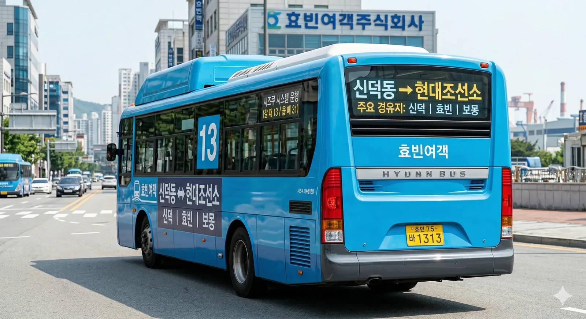

분류: 효빈광역시의 간선버스 | 효빈광역시의 교통
효빈광역시
간선버스
급행
간선
순환
지선
광역
좌석
마을
공항
투어
[ 펼치기 · 접기 ]
간선버스 노선 번호 (전체)
11
11-1
12
13
14
15
16
17
18
19
21
22
22-1
23
24
25
26
27
28
29
31
32
33
33-1
34
35
36
37
38
39
41
42
43
45
46
47
48
49
51
52
53
54
56
57
58
59
61
62
63
64
65
66
66-1
67
68
69
71
72
73
74
75
76
77
77-1
78
79
81
82
83
84
85
86
87
88
88-1
89
91
92
93
94
95
96
97
98
1. 노선 정보
|
 |
| 중구 신덕동을 출발하는 13번 버스 |
| 🚌 효빈 버스 13 | |||||
| 기점 | 효빈광역시 중구 신덕동 (신덕동주민센터) |
종점 | 효빈광역시 북구 곡진동 (현대조선소) |
||
| 종점행 | 첫차 | 05:00 | 기점행 | 첫차 | 05:00 |
| 막차 | 23:00 | 막차 | 23:10 | ||
| 배차간격 | 평일 17~22분 / 주말 27~32분 | ||||
| 운수사명 | 효빈여객 | 인가대수 | 11대 | ||
| 노선 | 신덕동주민센터 - 신덕 - 효빈 - 보몽 - 오내사거리 - 중수 - 등기 - 현대조선소 | ||||
| 🚌 효빈 버스 31 | |||||
| 기점 | 효빈광역시 북구 곡진동 (현대조선소) |
종점 | 효빈광역시 중구 신덕동 (신덕동주민센터) |
||
| 종점행 | 첫차 | 05:10 | 기점행 | 첫차 | 05:10 |
| 막차 | 23:05 | 막차 | 23:15 | ||
| 배차간격 | 평일 17~22분 (13번과 연계 운행) | ||||
| 노선 | 현대조선소 - 등기 - 중수 - 오내사거리 - 보몽 - 효빈 - 신덕 - 신덕동주민센터 | ||||
| * 볼드체로 표시된 구간은 주요 경유지 및 환승 거점입니다. | |||||
2. 개요
효빈광역시의 1권역(중구 신덕동)과 3권역(북구 곡진동)을 잇는 간선버스 노선이다. 중구의 주거밀집지역인 신덕동과 북구의 핵심 산업단지인 현대조선소를 연결한다. 중구 구간 정체 및 효율적인 운행을 위해 배차간격이 조정되어 운행 중이다.
3. 정류장 목록
4. 특징
- 조선소 출퇴근 노선: 현대조선소로 출퇴근하는 근로자들의 수요가 절대적이다. 평시에는 배차 간격이 다소 길어 20분 이상 기다려야 할 수도 있다.
- 번호 체계: 신덕 출발은 13번, 조선소 출발은 31번으로 운행한다.
- 중수 경유: 중수 지역을 경유하여 북구 내 다른 지역으로 이동하는 수요도 일부 담당한다.
5. 시간표
6. 여담
- 조선소 작업복을 입은 승객들이 많이 탑승하여, 출퇴근 시간 버스 안에서는 기름 냄새가 난다는 이야기가 있다.
- 배차간격이 길어 놓치면 지각 확정이므로 시간표 확인이 필수다.